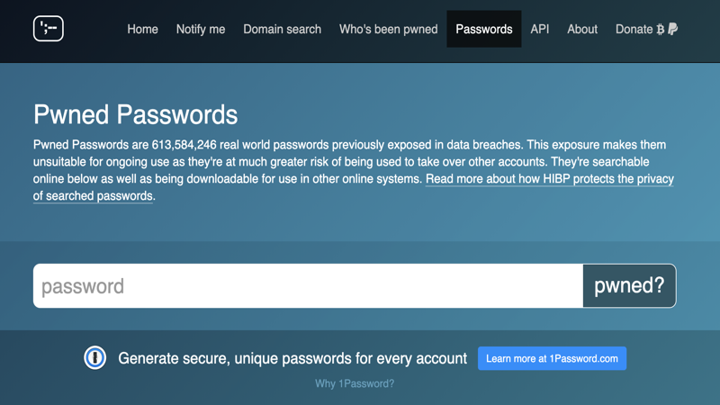

The Python password checker

The idea and purpose behind this Python project is let you check if your passwords have been leaked in the past without compromise your security.
For this purpose you could have just used the popular website: https://haveibeenpwned.com/ that let you check if your email or password has been pawned.üò±
While I don't have any concern to enter my email in their website, what about my password? ü§î
Personally, I don't think it is always a good idea to send my password over the internet.
Even if the website connection is secure, when I press submit my password is sent through the internet to the website server and someone could be on the middle and intercepted it.
As a developers, we can create secure and free way to achieve our goal and it involves some coding.
Obviously, there are many service out there that under the hood has implemented this type of check like 1passord, Keeper, Sticky Password etc.
So, the more secure way to doing it is built a password checker using the haveibeenpwned Password API.
"When it comes to security sometimes the best thing is to trust no one."
üßê
Building a password checker in Python
First we need to import some modules from the Python Standard Library
The request: to be able to request data via the internet
The hashlib: to hash a password since we don't want to send over the internet our password.
import requests
import hashlib
import sys # to remove after the version 1.0.1
Our first function is the one that we need to establish a connection to the API and get a response from the server based on our query:
def request_api_data(query_char):
url = 'https://api.pwnedpasswords.com/range/' >+ query_char
res = requests. get (url)
# check
if res.status_code != 200 :
raise RuntimeError( f'Error fetching {res.status_code}, check the API and try again' )
return res
Short intro to Hashing
A security step in building our solution.
The ideas is not to send over the internet the real password, in fact you should never store user password to a DB without hashing it first;
Since we're using the Password API, and we want to use a 'fast' encryption algorithm, we will used the SHA1.
Ex.Sha1 hash generator
password123 = CBFDAC6008F9CAB4083784CBD1874F76618D2A97 in SHA1.
Hashing is idempotent, or let's say, it's like a Pure function: giving the same input (password) it always return the same value (hash)
The query parameter
Plus, to improve anonimity, instead of give to the API the entire hash of a password, we just gave a little bit of it, just the first 5 characters.
We are applying here a 'key anonimity technique' to dont give away our personal information.
The idea here is to give only the first 5 characters of the hashed password and the API send us back a list of all hashed 'leaked' passwords starting with those 5 characters. On our side we can then check the 'tail' left of our hashed password against the list we got from the query (if it has been leaked).
At this point we can implement the functions that are going to process the data and giving us an output, if found.
We need to create a function to read the response.
This function check the tail of the hashed password against the list and look for how many times have been hacked.
def pwned_api_check (password):
# Check the password if it exists in API response using the haslib library
sha1password = hashlib.sha1(password.encode( 'utf-8' )).hexdigest().upper()
first5_chars,tail = sha1password[:], sha1password[ >5 :]
# here we pass the first 5 chars for the check on the hashed password
response = request_api_data(first5_chars)
return get_password_leak_count(response,tail)
# Underneath a temporarely function just to check we get the hashed version of leaked passwords, don't use it in production! üòÖ
# this function is going to be replaced with: get_password_leak_count()
def read_response(response):
print(response.text)
# Ex. expected results in the format: <hashed passwords>:<number of time the password has been leaked>
# FHSEU347RG23HYGJ432Y3253BBNN:2
# FHSEUGFYW4G55H432Y325748HBFF:4
# XHUAQIW3B4IR78YE3TF483CUIFHG:1
# ...
# left to implement
def get_password_leak_count (hashes, hash_to_check):
pass
# check if the password exist in the API response
Implementing: get_password_leak_count()
def get_password_leak_count(hashes, hash_to_check):
# this line to get a 'tuple comprehension' that has the number of leaks for hash
hashes = ( line.split ( ':' ) for line in hashes.text.splitlines())
for h, count in hashes:
# print (h,count ) # Expected: XHUAQIW3B4IR78YE3TF483CUIFHG 1
# now we need to check from all the hashes leaked if mine is there (I do not provive this to the service, is only on my machine)
if h == hash_to_check: # hash_to_check is stored securely in the 'tail' parameter in the previous function
return count
return 0
Last, we need to create a main fuction that is going to receive the arguments that we give in the terminal
def main(args):
for password in args:
count = pwned_api_check(password)
if count:
print(f'{password} was found {count} times... Yout should change your password!')
else:
print(f'{password} NOT found. You are good to go!')
return 'done.'
Last but not the least,
we are passing our password in the Terminal and this information is stored in our machine memory (try arrow up üòß ), and this is not super secure.
So, if we want to be completely safe against possible attacks, we can read passwords from a text file.
Implementing the password checker using a text file.
To achieve that, we can comment out our function main() and create a new function that is reading a single/list of passwords from a txt file and pass it as a argument into the checking function.
with open ('pass.txt') as password s:
# skip first line of instructions
next (passwords)
list_passwords = [line.rstrip('\n') for line in passwords]
# print (list_passwords)
for password in list_passwords:
count = pwned_api_check(password)
if count:
print ( f'{password} was found {count} times... Yout should change your password!' )
else:
print(f'{password} NOT found. You are good to go!')
Where you can find the code:
GitHub RepoI think security is not always considered a top priority for some people but for me is paramount.
The code in Github is available to fork and for further implementations.
I built an offline tool that I am using quite often and I enjoyed the building process, using different Python libraries and API service.